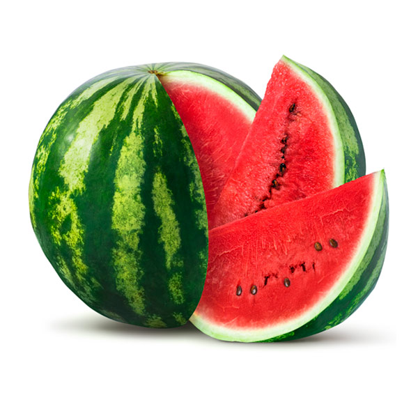
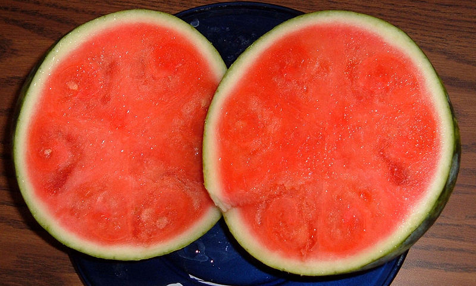
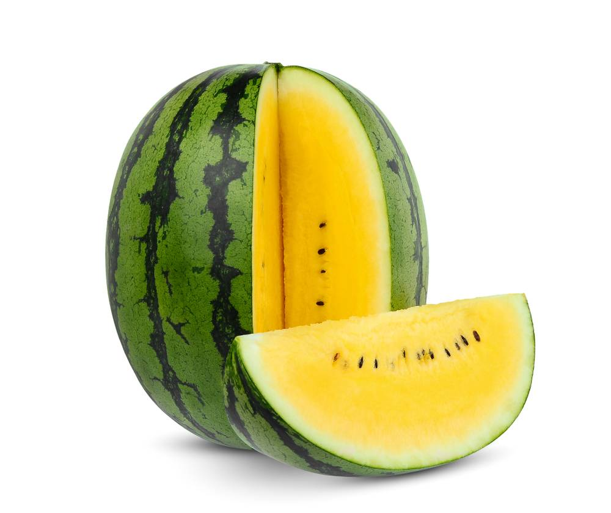

Originaria de África tropical, la sandía se cultiva desde hace miles de años. Existen evidencias arqueológicas de su presencia en el antiguo Egipto, donde se colocaban en las tumbas de los faraones para alimentarlos en su viaje al más allá.
Gracias a su enorme contenido de agua y electrolitos, es perfecta para combatir la deshidratación durante los días calurosos. Además, aporta licopeno, un potente antioxidante responsable de su característico color rojo y beneficioso para la salud cardiovascular.
En la cocina se disfruta habitualmente fresca en rebanadas, ensaladas de frutas o paletas heladas. Su cáscara verde y lisa protege una pulpa dulce y crujiente que la convierte en una opción saludable y baja en calorías.
Variedades de Sandía

Crimson Sweet
La variedad clásica de cáscara con franjas verdes claras y oscuras, pulpa de color rojo intenso y un sabor sumamente dulce.

Sandía Sin Semillas
Obtenida mediante hibridación natural, ofrece una textura uniforme y cómoda para consumir sin preocuparse por las pepitas.

Sandía Amarilla
Una variante exótica con pulpa brillante de color amarillo, con un sabor suave con notas ligeramente acarameladas.